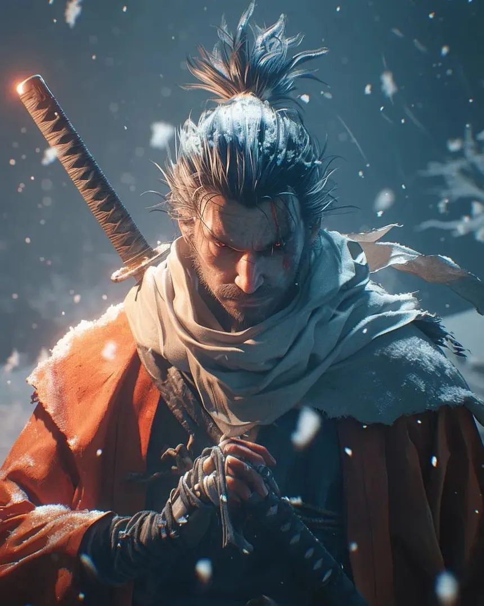
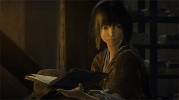
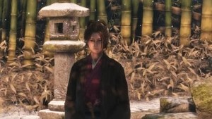
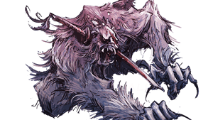
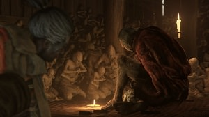

Allied
Ashina Clan
A once-proud warrior clan holding the mountain stronghold of Ashina, now stretched thin by war on every border. Its leadership will burn its own traditions to the ground if that's what survival costs.
A REBUILT LORE RECORD

An account of the shinobi Wolf, a shinobi who embarks on a quest to rescue his lord - the Divine Heir he is bound to protect, and becomes embroiled into a conflict for Ashina's fate. , and the war for Ashina that neither death nor resurrection ever quite settles.
— unroll the record below —
Record One
Four powers pull at Ashina from different directions. Each entry is closed under an ink seal — break it to read what's beneath.
A once-proud warrior clan holding the mountain stronghold of Ashina, now stretched thin by war on every border. Its leadership will burn its own traditions to the ground if that's what survival costs.
The shogunate's enforcement arm, dispatched to bring a rebellious province to heel. Its true interest lies less in conquest than in the bloodline power rumored to reside within Ashina's walls.
A secluded mountain monastery whose monks have pursued their own private path to immortality for generations, sealing the mountain off from a world they've stopped answering to.
A hidden line of shinobi bound since childhood to a single act: protect one lord, without question, for as long as they live — however many times that turns out to be.
Record Two
Every portrait here is kept behind a mask by default. Hover to see the face beneath.

A shinobi raised from childhood for one purpose: to guard his lord no matter the cost. Having already failed once and paid for it with an arm, he returns wearing a carved replacement and carrying a debt he intends to repay in full.

A young lord born into a bloodline that grants a strange and unwanted kind of immortality — one that draws every ambitious hand in the region toward him, and toward Wolf, whose entire purpose now orbits keeping him safe.

Heir to Ashina's leadership, hardened into someone willing to defy even his own grandfather's wishes if it means keeping the clan's home from falling.

The aging general who once unified this land through sheer will, now watching the peace he built come apart faster than he can hold it together.

A doctor treating wounds that shouldn't be survivable, and studying a sickness that spreads through anyone who gets too close to the bloodline's power.

The man who raised Wolf and trained him from nothing into a weapon, whose loyalties turn out to answer to an older, colder debt than fatherhood.

A shinobi hunter guarding a corner of Ashina's estate with an arsenal of illusion and misdirection, testing whether Wolf's training was ever enough.

Once a temple's protector, now a grief-maddened giant twisted further by the same immortality affliction spreading through the region.

A former shinobi who buried that identity along with his past, now carving prosthetic limbs for those still fighting wars he's chosen to walk away from.
Record Three
Reconstructed in the order Wolf seems to have lived them.
Wolf fails to protect his young lord, loses an arm in the process, and is given a carved replacement by a stranger with his own reasons for keeping shinobi alive.
Years on, Kuro is captured, and Wolf's entire reason for living narrows back down to a single task: get him back.
The Interior Ministry's army presses in on a clan already stretched past its limits, forcing old rivalries within Ashina itself back into the open.
As the truth of Kuro's bloodline surfaces, a wasting sickness begins spreading through everyone who's been touched by its power — Wolf included.
Owl's history with Wolf's shinobi lineage resurfaces, and the loyalty Wolf was raised to believe in turns out to run in a direction he never expected.
Kuro and Wolf are left with a choice about the bloodline itself — end what it grants, transform it, or let it continue — knowing any answer changes what "protecting him" is even supposed to mean.
Record Four
The places this war is actually being fought over.
The clan's mountain stronghold and the center of the whole conflict, fought over one wall at a time.
A burned family estate revisited only through memory, tied to the day Wolf's failure began.
A remote monastery pursuing forbidden practice far from any oversight, hidden high above the rest of the region.
A poisoned lowland swamp where an isolated village has made its own uneasy peace with the sickness spreading through the land.
A hidden realm standing outside ordinary time, tied directly to the source of the bloodline's power.